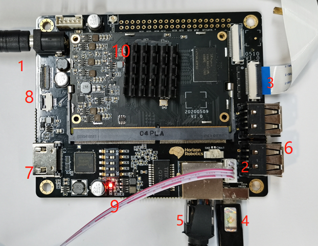
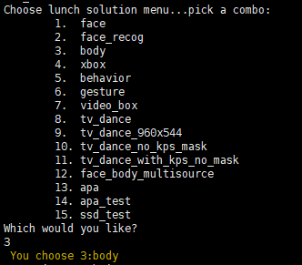
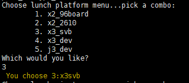
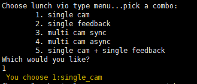
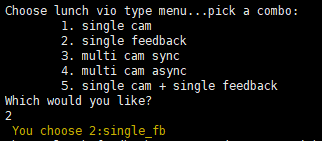
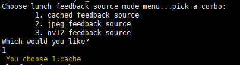
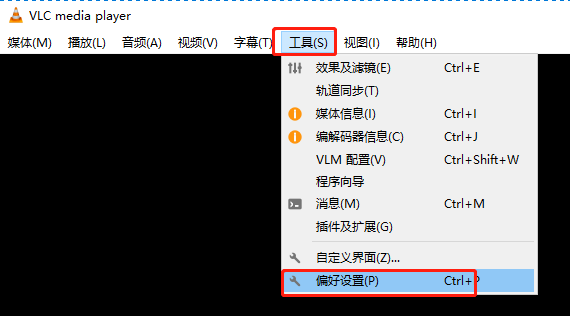
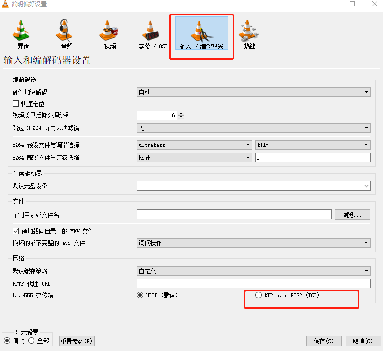

常见问题¶
开发板外设连接说明¶
x3开发板外设接口说明，如下图： 
| 序号 | 接口说明 |
|---|---|
| 1 | 12V电源接口 |
| 2 | debug串口(默认921600) |
| 3 | Camera接口 |
| 4 | micro usb接口 |
| 5 | 千兆网口(默认IP：192.168.1.10) |
| 6 | usb 2.0 x4接口 |
| 7 | HDMI输出接口 |
| 8 | LCD/TP接口 |
| 9 | 电源指示灯 |
更多硬件详情，请参照《X3SDB硬件用户手册》。
IP设置¶
使用系统自带的工具设置IP地址
hrut_ipfull s IP(x.x.x.x) MASK(y.y.y.y) GATEWAY(z.z.z.z)
比如
hrut_ipfull s 192.168.1.100 255.255.255.0 192.168.1.1
命令设置完后，重启系统即可生效
查看系统镜像版本¶
cat /etc/version
uname -a
查看CPU、BPU使用率¶
查看cpu使用率：top
查看bpu使用率：hrut_somstatus
修改cma内存大小¶
cma内存用于vio图像链路以及bpu内存，若程序运行起来，提示bpu malloc failed，一种可能是代码实现过程中未及时释放bpu内存，还有一种可能情况是场景复杂，cma内存确实不足。
查看系统cma内存的方式：使用memstat命令，看cma_reserved的大小。
程序运行过程中，可以通过如下命令查看当前系统正在运行的所有程序占用的cma内存大小：
watch -n 1 cat /sys/kernel/debug/ion/heaps/ion_cma
若需要修改cma内存大小，则需要连接串口，在系统启动时进入uboot模式，进入uboot模式，运行如下两个命令,则将cma内存设置为1024MB
setenv ion_size 1024
saveenv
编译、部署及示例运行¶
示例运行¶
aiexpress开发包提供了多个solution示例和交互式运行脚本，这里以body solution为例，说明如何运行示例。
提前拷贝部署包到设备上，然后进入deploy目录，执行命令：
sh run.sh w
命令中w表示log级别，支持i/d/w/e/f等级别日志，根据需要自行设置。
执行命令后，提示选择solution：

选择3（body solution）后回车，提示选择设备平台：

选择3（x3_sdb表示x3生态开发板）后回车，提示选择vio类型：

选择1（表示单路vio输入）后回车，提示选择sensor类型：

选择2（os8a10摄像头）后回车，示例程序开始启动运行。
回灌模式¶
回灌方式说明¶
X3版本回灌支持3种模式，分别为cache， jpg与nv12这3个模式，区别如下：
| 回灌方式 | 功能说明 |
|---|---|
| cache | 预先将所有的jpg图像解码到内存中，回灌的时候不需要再进行图像解码操 |
| jpg | 依次读取图像，解码，回灌。若使用循环回灌方式，则每次回灌会单独读取图像解码一次 |
| nv12 | 和jpg的区别是回灌的图片是nv12的，只需要读取图像数据，不需要解码 |
| 回灌方式 | 回灌图像配置 |
|---|---|
| cache | configs/vio_config.json.x3dev.fb中image_list字段 |
| jpg | configs/vio_config.json.x3dev.fb中配置的file_path，默认为configs/vio_hg/name_jpg.list |
| nv12 | configs/vio_config.json.x3dev.fb中配置的file_path，默认为configs/vio_hg/name_nv12.list |
回灌示例¶
这里以body solution为例，说明如何运行回灌模式。
提前拷贝部署包到设备上，然后进入deploy目录，执行命令：
sh run.sh w
命令最后的w表示log级别，支持i/d/w/e/f等级别日志，根据需要自行设置。
执行命令后，提示选择solution：
选择3（body solution）后回车，提示选择设备平台：
选择3（x3_sdb表示x3生态开发板）后回车，提示选择vio类型：

选择2（单路回灌模式）后回车，提示选择回灌输入类型：

选择1（选择cache模式）后回车，回灌模式示例程序开始启动运行。
usb智慧电视场景，切换uvc与web模式¶
支持usb智慧电视场景的solution有：face、face_recog、body、behavior、gesture、tv_dance、tv_dance_960x544、tv_dance_no_kps_mask、tv_dance_with_kps_no_mask等。
不同solution对应不同的显示配置文件:
| solution示例 | 显示配置文件 |
|---|---|
| face | configs/visualplugin_face.json |
| face_recog | configs/visualplugin_face.json |
| body | configs/visualplugin_body.json |
| behavior | configs/visualplugin_body.json |
| tv_dance | configs/visualplugin_body.json |
| tv_dance_960x544 | configs/visualplugin_body.json |
| tv_dance_no_kps_mask | configs/visualplugin_body.json |
| tv_dance_with_kps_no_mask | configs/visualplugin_body.json |
aiexpress的部署包默认是web模式，运行solution后，使用Chrome浏览器观看叠加算法效果后的实时视频流。
如果需要切换到uvc模式，启动前修改对应显示配置文件中的display_mode字段，对应关系如下：
| display_mode字段 | 模式 |
|---|---|
| 1 | web模式 |
| 2 | uvc模式 |
多路IPM图像回灌¶
multi_input_hapi_ipm参考方案支持回灌多路IPM图像，IPM图像格式支持nv12和jpg，分辨率为256*512(注：模型输入分辨率) 回灌步骤：
jpg格式回灌¶
发布版本中，默认时jpg回灌模式
进入到deploy/configs/vio_hg/multi_fb/name_jpg_256x512目录
替换图片并修改对应的fb_pipex.list文件即可
1、准备回灌图片¶
images_pipe0存放第1路回灌图片，images_pipe1存放第2路回灌图片，以此类推，把需要回灌的图片放入对应目录
2、修改回灌文件列表¶
fb_pipe0.list文件中填写第1路回灌图片路径列表，fb_pipe1.list对应第2路回灌图片路径列表，以此类推，修改成需要回灌的图片路径即可
nv12格式回灌¶
进入到deploy/configs/vio_hg/multi_fb/name_nv12_256x512目录
1、准备回灌图片¶
images_pipe0存放第1路回灌图片，images_pipe1存放第2路回灌图片，以此类推，把需要回灌的图片放入对应目录
2、修改回灌文件列表¶
fb_pipe0.list文件中填写第1路回灌图片路径列表，fb_pipe1.list对应第2路回灌图片路径列表，以此类推，修改成需要回灌的图片路径即可
3、修改配置¶
修改deploy/configs/vio_config.json.j3dev.multi_fb_sync.256x512配置中multi_feedback_mode字段为nv12_image_list;
配置中file_path字段修改为回灌图片的路径。
| multi_feedback_mode字段 | 模式 |
|---|---|
| nv12_image_list | nv12图片回灌 |
| jpeg_image_list | jpg图片回灌 |
说明¶
多路回灌时，要求每一路的图片数量必须相同。 比如第一路回灌，fb_pipe0.list中填写N个图片路径，那么第二、三、四路回灌，也必须填写N个图片路径。
视频盒子本地调试¶
在使用vlc调试本地RTSP视频流时，可能也会遇到视频码流花屏的情况，这里建议vlc播放器也选择tcp协议。 vlc使用tcp协议具体设置如下：
选择工具，偏好设置

然后选择输入/编解码器，选中RTP over RTSP(TCP)，然后保存。
